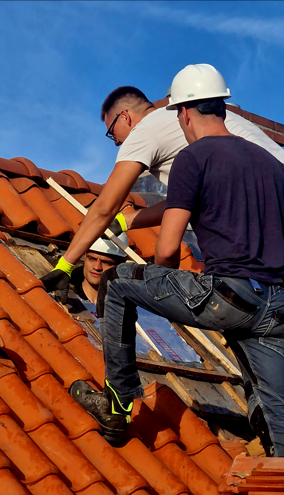

Ervaring, Vakmanschap en Vertrouwen.
Bij DakDeng combineren we jarenlange ervaring met vakmanschap om betrouwbare dakoplossingen te leveren. Of het nu gaat om nieuwbouw, renovatie of onderhoud – ons team staat garant voor kwaliteit, veiligheid en klanttevredenheid. Wij geloven in transparante communicatie en duurzame materialen voor elk project.
